Projet d'association · Pays Basque · Landes · Béarn
Rendre visibles les douleurs invisibles.
Pelvia, institut du pelvis du Pays Basque, informe, oriente et accompagne les femmes concernées par les pathologies fonctionnelles gynécologiques et pelviennes.
Découvrir le projet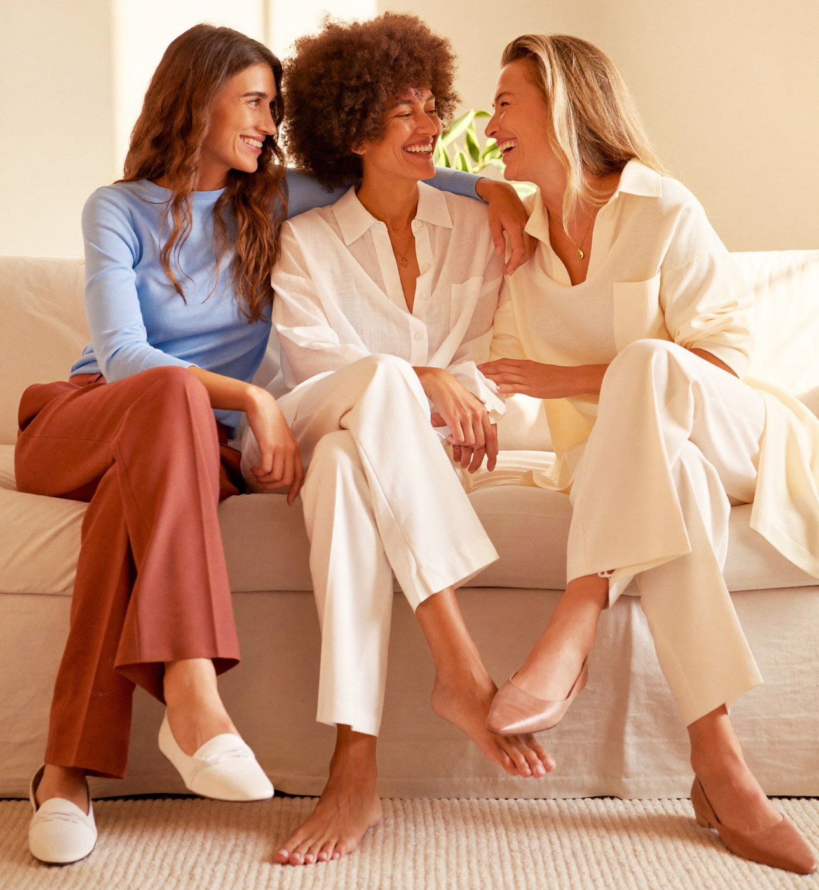
Endométriose, fibromes, douleurs pelviennes : des milliers de femmes vivent, ici, avec des douleurs que personne ne voit. Nous avons décidé de les rendre visibles.
Une association indépendante, à but non lucratif, fondée par deux chirurgiennes gynécologues du territoire. L'information y est validée médicalement, l'orientation y est concrète, la communauté y est locale.
Une porte ouverte sur l'aube.
Le logotype validé — concept « L'Aube » : le seuil, l'horizon qui le traverse, le jour qui se lève.
L'arche
Le seuil que l'on franchit pour sortir de l'errance et entrer dans un parcours. Son cadre fin fait écho aux porches du territoire, sans folklore.
L'horizon
La ligne qui traverse le seuil et le dépasse de part et d'autre : le parcours de soins continue au-delà de la porte. Sur chaque support, ce trait file et relie tout.
L'aube
Le demi-soleil terracotta posé sur l'horizon : le jour se lève sur des douleurs longtemps restées dans l'ombre. C'est la promesse de la marque, dessinée.
Médicale sans froideur,
féminine sans cliché.
Quatre couleurs, deux typographies, une règle : la rigueur d'un contenu validé, portée par la chaleur d'une marque humaine.
Playfair Display
Titres et wordmark, l'élégance éditorialeFigtree
Textes courants, la clarté accessible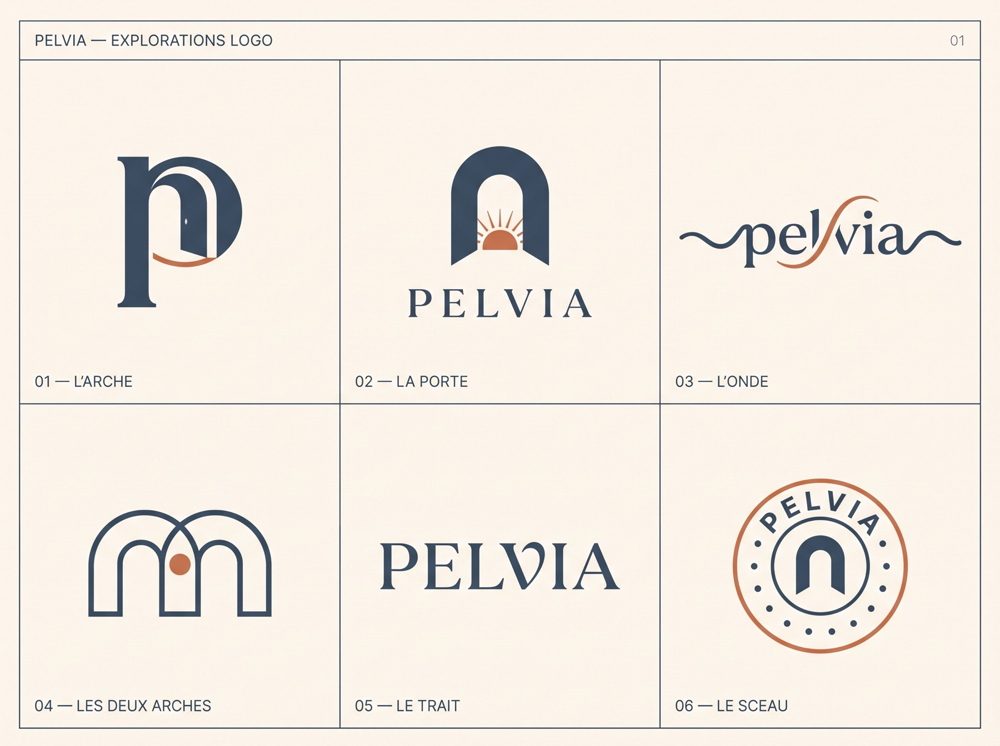
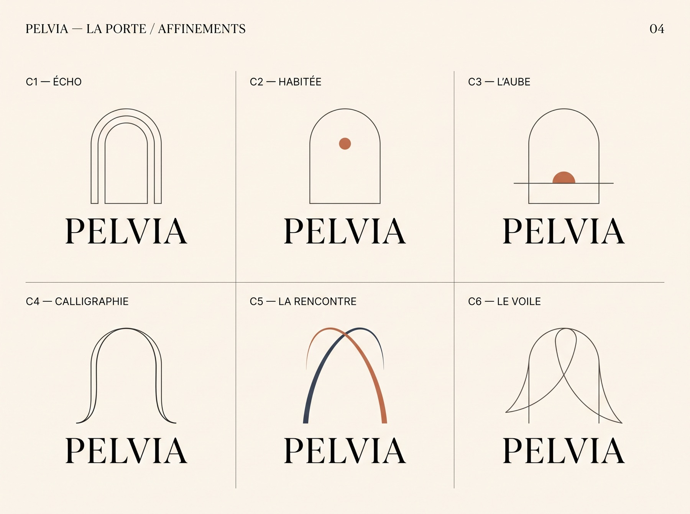
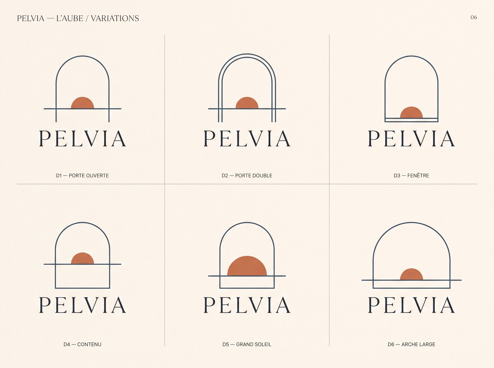
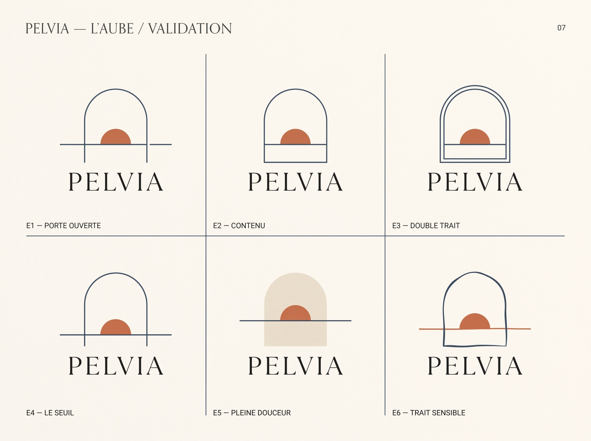
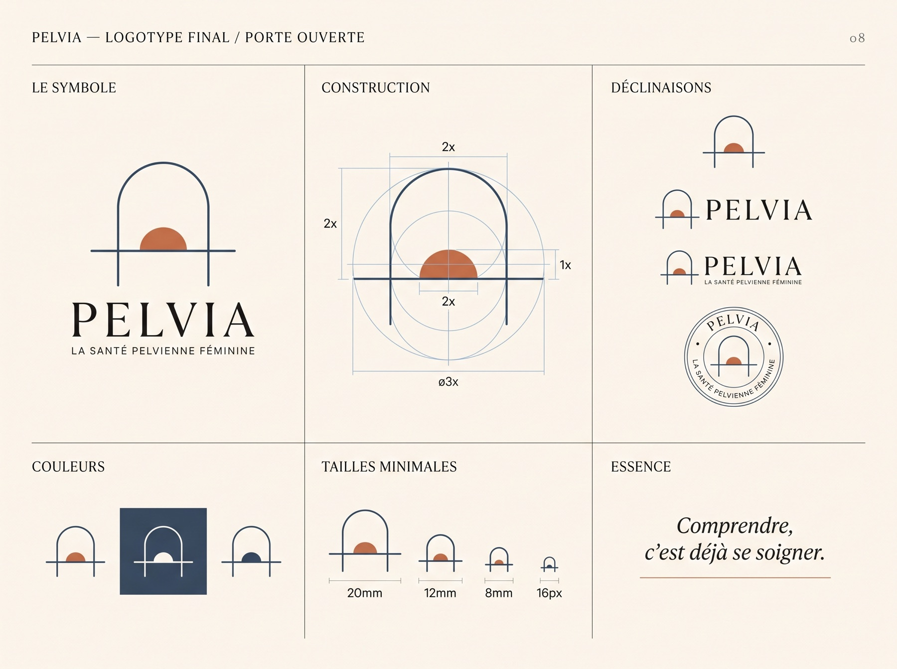
Un logo qui vient de loin.
La marque en action.
Site, papeterie, réseaux : le même trait, la même ligne d'horizon, du grand écran à la carte de visite.
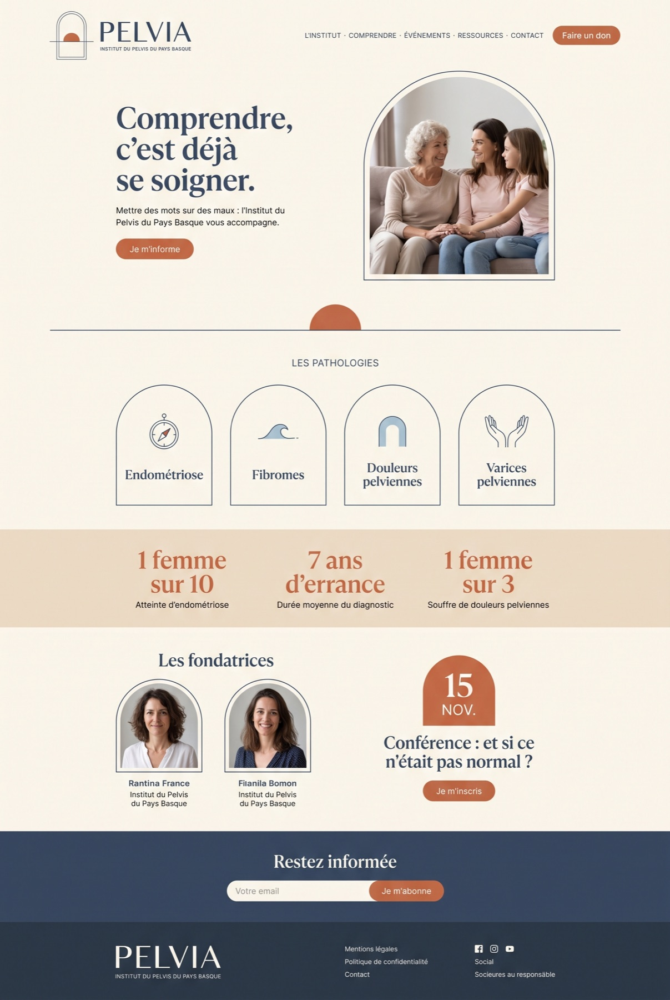
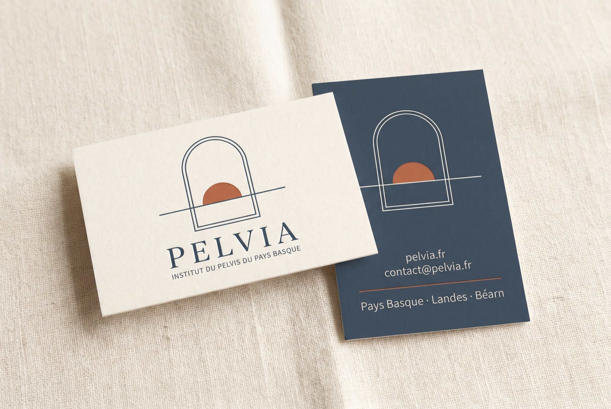
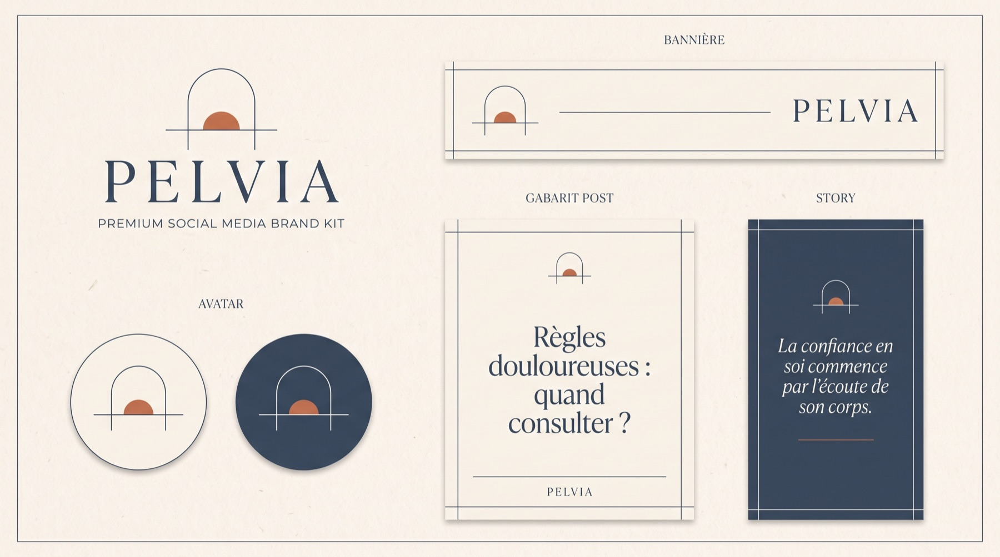
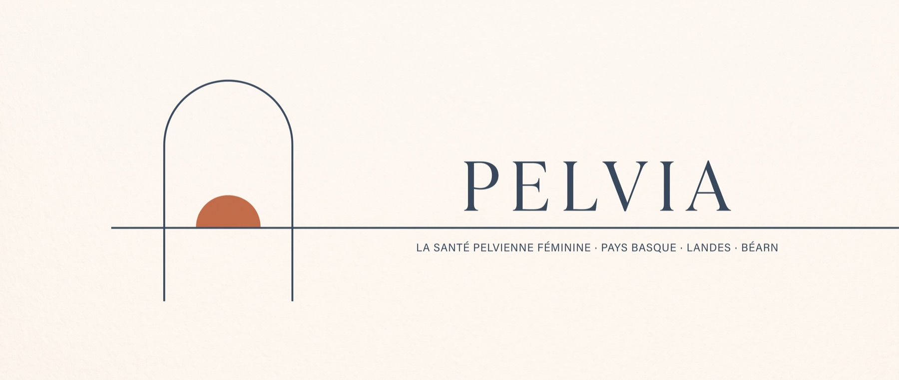
Des contenus qui portent la voix de l'association.
Pédagogie graphique, terrain, incarnation : trois registres, une seule ligne éditoriale.
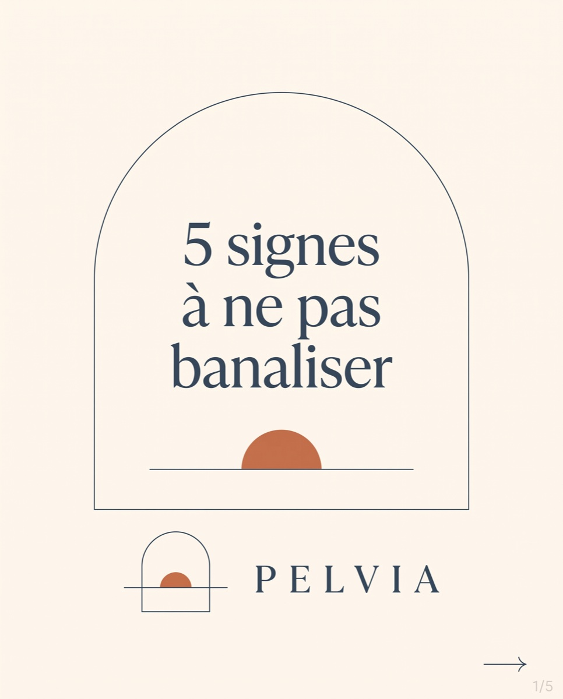
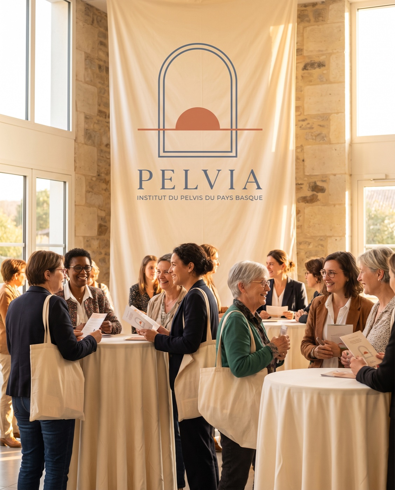
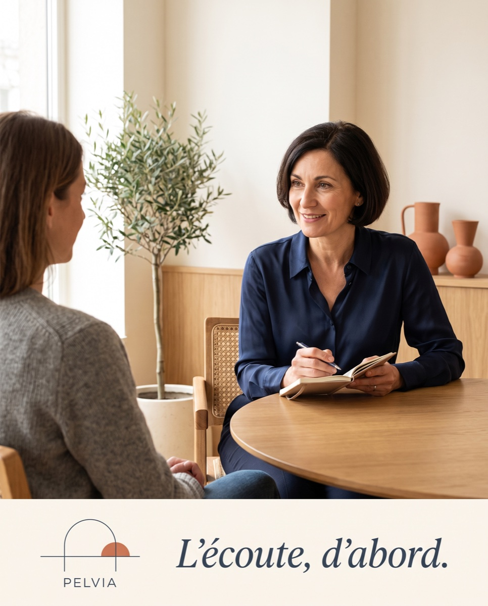
Les fondatrices
Deux spécialistes,
un même engagement.
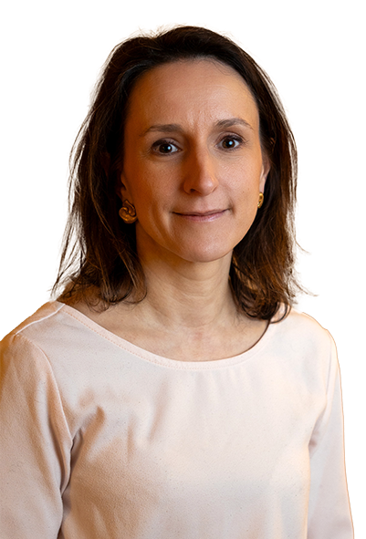
Dr Claire Théodore
Gynécologue obstétricienne · Bayonne, Dax
Spécialiste des pathologies mammaires et pelviennes bénignes, de l'endométriose et de la chirurgie de la fertilité.
« Cette association existe pour que les femmes sachent plus tôt. »
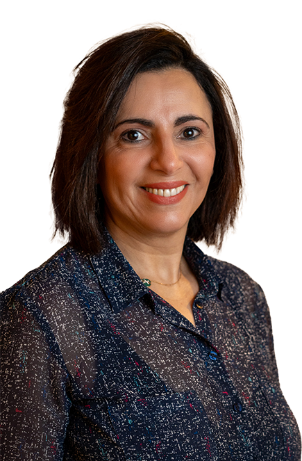
Dr Dounia Skali
Chirurgienne gynécologue · Bayonne, Biarritz
Spécialiste de la prise en charge chirurgicale de la femme et de la chirurgie gynécologique fonctionnelle.
« Informer fait partie du soin. »
De la marque au lancement.
Quatre étapes séparent ce projet de sa première conférence publique.
Choix définitif du concept par les fondatrices, dépôt du nom et des domaines.
Vectorisation finale, charte, site complet, templates et dossier partenaires.
Shooting officiel, film manifeste, premiers contenus pédagogiques validés.
Réseaux sociaux, presse locale et conférence inaugurale.
Pelvia · Institut du pelvis du Pays Basque
Document de présentation confidentiel · Direction de communication, Pierre Bargelès · 2026